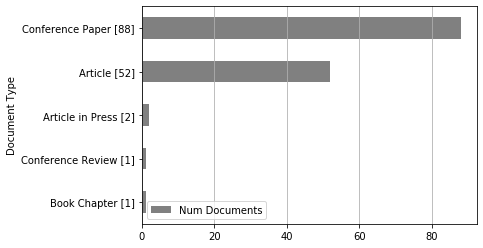
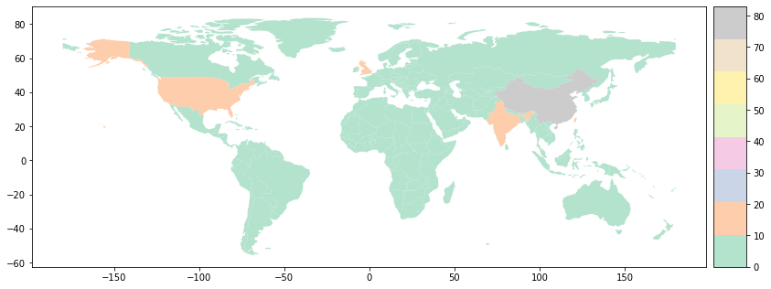

Analysis: Documents by terms¶
[1]:
import pandas as pd
from techminer import RecordsDataFrame
rdf = RecordsDataFrame(
pd.read_json(
'step-07.json',
orient='records',
lines=True))
Document Type¶
[2]:
rdf.documents_by_terms('Document Type')
[2]:
| Document Type | Num Documents | ID | |
|---|---|---|---|
| 0 | Conference Paper | 88 | [[*7*], [*8*], [*9*], [*12*], [*13*], [*14*], ... |
| 1 | Article | 52 | [[*0*], [*1*], [*2*], [*3*], [*4*], [*5*], [*6... |
| 2 | Article in Press | 2 | [[*92*], [*95*]] |
| 3 | Book Chapter | 1 | [[*136*]] |
| 4 | Conference Review | 1 | [[*141*]] |
[3]:
rdf.documents_by_terms('Document Type').print_IDs()
[17]:
rdf.documents_by_terms('Document Type').barhplot();
<Figure size 864x576 with 0 Axes>

[16]:
rdf.documents_by_terms('Document Type').altair_barhplot()
[16]:

[6]:
rdf.documents_by_terms('Document Type').seaborn_barhplot()

[7]:
rdf.documents_by_terms('Document Type').barplot();
<Figure size 576x864 with 0 Axes>

[8]:
rdf.documents_by_terms('Document Type').altair_barplot()
[8]:

[9]:
rdf.documents_by_terms('Document Type').seaborn_barplot()

Source title¶
[10]:
rdf.documents_by_terms('Source title', minmax=(2,100))
[10]:
| Source title | Num Documents | ID | |
|---|---|---|---|
| 0 | Lecture Notes in Computer Science (including s... | 17 | [[*36*], [*42*], [*45*], [*49*], [*88*], [*89*... |
| 1 | IEEE Access | 5 | [[*34*], [*38*], [*39*], [*46*], [*47*]] |
| 2 | Expert Systems with Applications | 5 | [[*0*], [*1*], [*11*], [*54*], [*139*]] |
| 3 | Procedia Computer Science | 4 | [[*40*], [*48*], [*90*], [*91*]] |
| 4 | Advances in Intelligent Systems and Computing | 3 | [[*41*], [*51*], [*52*]] |
| 5 | Applied Soft Computing Journal | 3 | [[*67*], [*80*], [*140*]] |
| 6 | Neural Computing and Applications | 3 | [[*27*], [*37*], [*44*]] |
| 7 | Communications in Computer and Information Sci... | 2 | [[*30*], [*94*]] |
| 8 | Proceedings - 17th IEEE International Conferen... | 2 | [[*23*], [*24*]] |
| 9 | Neurocomputing | 2 | [[*10*], [*125*]] |
| 10 | ACM International Conference Proceeding Series | 2 | [[*69*], [*75*]] |
| 11 | Proceedings of the International Joint Confere... | 2 | [[*63*], [*64*]] |
| 12 | International Journal of Circuits, Systems and... | 2 | [[*103*], [*127*]] |
| 13 | Knowledge-Based Systems | 2 | [[*4*], [*25*]] |
| 14 | Journal of Supercomputing | 2 | [[*95*], [*135*]] |
Keywords¶
[11]:
rdf.documents_by_terms('keywords (cleaned)', sep=';', top_n=30)
[11]:
| keywords (cleaned) | Num Documents | ID | |
|---|---|---|---|
| 0 | forecasting | 108 | [[*3*], [*4*], [*5*], [*6*], [*7*], [*8*], [*9... |
| 1 | time series | 91 | [[*3*], [*6*], [*7*], [*8*], [*9*], [*11*], [*... |
| 2 | deep learning | 76 | [[*3*], [*4*], [*5*], [*7*], [*13*], [*14*], [... |
| 3 | Financial markets | 68 | [[*3*], [*4*], [*6*], [*7*], [*9*], [*11*], [*... |
| 4 | trading | 65 | [[*3*], [*4*], [*6*], [*9*], [*11*], [*12*], [... |
| 5 | artificial neural networks | 62 | [[*4*], [*6*], [*9*], [*10*], [*12*], [*14*], ... |
| 6 | commerce | 61 | [[*3*], [*4*], [*6*], [*7*], [*9*], [*19*], [*... |
| 7 | long short-term memory neural network | 54 | [[*0*], [*1*], [*4*], [*6*], [*7*], [*12*], [*... |
| 8 | recurrent neural networks | 52 | [[*2*], [*6*], [*8*], [*9*], [*11*], [*12*], [... |
| 9 | time series forecasting | 43 | [[*0*], [*1*], [*4*], [*6*], [*8*], [*11*], [*... |
| 10 | financial time series | 38 | [[*6*], [*7*], [*13*], [*14*], [*18*], [*19*],... |
| 11 | finance | 35 | [[*5*], [*9*], [*14*], [*19*], [*20*], [*33*],... |
| 12 | machine learning | 35 | [[*0*], [*6*], [*10*], [*15*], [*19*], [*22*],... |
| 13 | stock forecasting | 34 | [[*3*], [*4*], [*11*], [*12*], [*18*], [*20*],... |
| 14 | financial data | 31 | [[*1*], [*2*], [*5*], [*7*], [*9*], [*14*], [*... |
| 15 | convolutional neural network | 29 | [[*13*], [*14*], [*18*], [*19*], [*26*], [*29*... |
| 16 | feedforward neural networks | 24 | [[*2*], [*26*], [*29*], [*37*], [*38*], [*39*]... |
| 17 | forecasting accuracy | 22 | [[*4*], [*5*], [*20*], [*36*], [*49*], [*60*],... |
| 18 | convolution | 21 | [[*14*], [*18*], [*19*], [*26*], [*45*], [*64*... |
| 19 | costs | 21 | [[*1*], [*11*], [*28*], [*30*], [*34*], [*56*]... |
| 20 | Learning algorithms | 19 | [[*3*], [*6*], [*9*], [*19*], [*25*], [*26*], ... |
| 21 | financial time series forecasting | 19 | [[*2*], [*3*], [*5*], [*12*], [*25*], [*26*], ... |
| 22 | Learning systems | 18 | [[*6*], [*14*], [*19*], [*25*], [*34*], [*38*]... |
| 23 | investments | 18 | [[*7*], [*22*], [*23*], [*35*], [*38*], [*60*]... |
| 24 | forecasting models | 16 | [[*20*], [*38*], [*41*], [*53*], [*61*], [*62*... |
| 25 | Brain | 15 | [[*6*], [*34*], [*41*], [*53*], [*56*], [*65*]... |
| 26 | algorithms | 14 | [[*2*], [*8*], [*9*], [*43*], [*45*], [*46*], ... |
| 27 | mean square error | 13 | [[*3*], [*7*], [*12*], [*35*], [*42*], [*50*],... |
| 28 | Big data | 12 | [[*3*], [*8*], [*19*], [*48*], [*58*], [*75*],... |
| 29 | stock markets | 12 | [[*6*], [*27*], [*43*], [*48*], [*62*], [*70*]... |
Country¶
[12]:
from techminer.strings import *
rdf['Country'] = rdf['Affiliations'].map(lambda x: extract_country(x, sep=';'))
rdf.documents_by_terms('Country', sep=';').head(15)
[12]:
| Country | Num Documents | ID | |
|---|---|---|---|
| 0 | China | 83 | [[*3*], [*4*], [*6*], [*6*], [*7*], [*10*], [*... |
| 1 | Taiwan | 20 | [[*14*], [*14*], [*17*], [*17*], [*17*], [*17*... |
| 2 | United States | 17 | [[*3*], [*22*], [*23*], [*23*], [*26*], [*26*]... |
| 3 | United Kingdom | 15 | [[*5*], [*7*], [*11*], [*11*], [*11*], [*28*],... |
| 4 | India | 15 | [[*9*], [*50*], [*51*], [*56*], [*56*], [*57*]... |
| 5 | Germany | 10 | [[*31*], [*31*], [*31*], [*39*], [*39*], [*62*... |
| 6 | Italy | 8 | [[*18*], [*24*], [*30*], [*103*], [*120*], [*1... |
| 7 | Colombia | 8 | [[*52*], [*52*], [*94*], [*94*], [*100*], [*10... |
| 8 | Poland | 5 | [[*1*], [*1*], [*107*], [*122*], [*122*]] |
| 9 | Singapore | 5 | [[*4*], [*6*], [*86*], [*109*], [*134*]] |
| 10 | Greece | 5 | [[*8*], [*110*], [*114*], [*133*], [*133*]] |
| 11 | Finland | 5 | [[*8*], [*110*], [*110*], [*114*], [*114*]] |
| 12 | Brazil | 5 | [[*61*], [*61*], [*63*], [*129*], [*129*]] |
| 13 | Turkey | 5 | [[*12*], [*21*], [*21*], [*67*], [*83*]] |
| 14 | South Korea | 4 | [[*28*], [*54*], [*54*], [*95*]] |
[13]:
rdf.documents_by_terms('Country', sep=';').worldmap()
